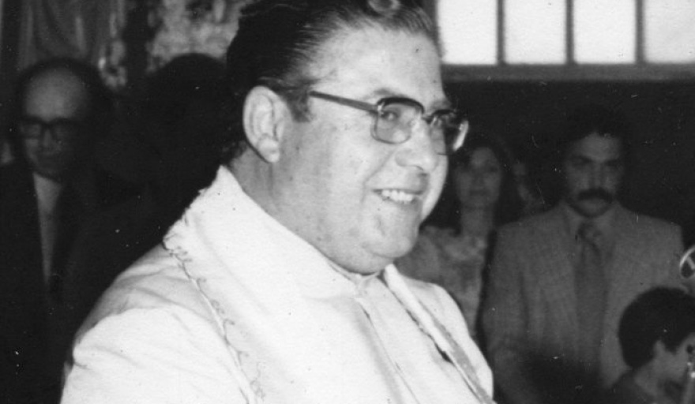
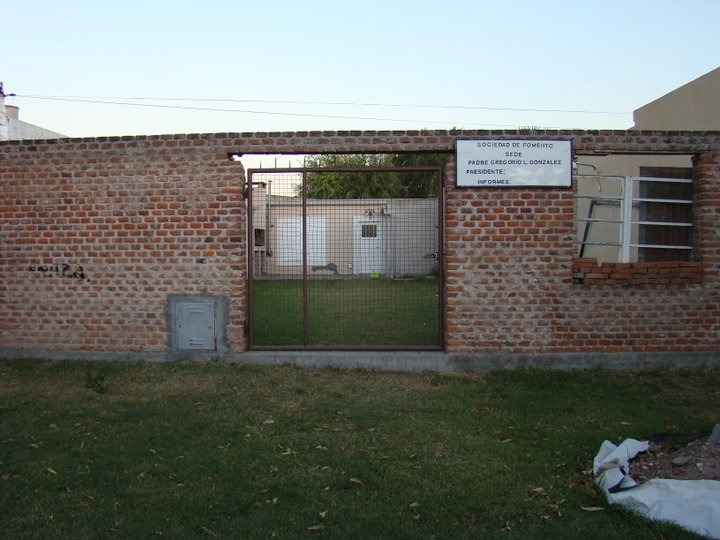

S.F.G.G
nashe
El Padre Gregorio González dejó una impactante huella en Junín, siendo reconocido no solo por su labor sacerdotal, sino también por su compromiso social y contribuciones a la educación.

El barrio que lo vio trabajar cambió su nombre en su honor en 1999. A lo largo de los años, el barrio experimentó crecimiento y mejoras, con la contribución de diversas sociedades de fomento.
El reconocimiento se materializó con mensajes elogiosos durante un evento, donde autoridades locales y la comunidad expresaron gratitud por su dedicación. La historia destaca la conexión profunda que estableció con la gente y cómo su legado sigue vivo en la ciudad.
En el corazón de nuestra comunidad, la Sociedad de Fomento Gregorio González se erige como un faro de progreso, comprometida con el bienestar y el desarrollo de quienes llaman hogar a esta hermosa localidad.

La sede de la Sociedad de Fomento está ubicada en Roque Vázquez 880. La comisión actual está presidida por Alejandra López.
Somos un grupo diverso de individuos apasionados, unidos por el amor a nuestra comunidad.
Desde vecinos comprometidos hasta profesionales con experiencia, cada miembro de la Sociedad de Fomento aporta su talento y dedicación para construir un futuro sólido y prometedor.
Si compartes nuestra visión y deseas contribuir al crecimiento y bienestar de Gregorio González, ¡únete a nuestra comunidad! La fuerza de cambio reside en cada uno de nosotros, y juntos podemos construir un futuro brillante.